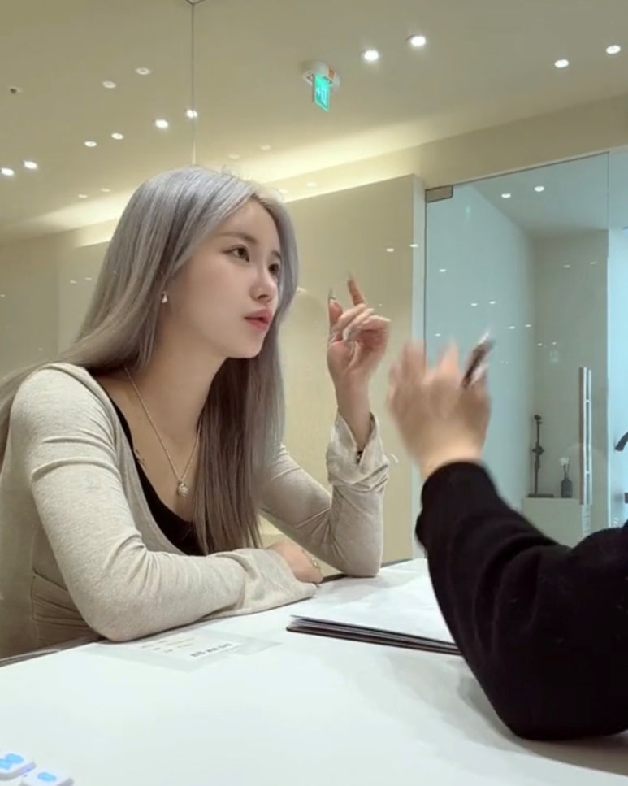

앞머리의 시작점
미간이 답답해 보이지 않도록 시작 위치와 농도를 확인하고, 기존 모가 가진 방향을 함께 봅니다.

청주 눈썹문신 디자인을 고민한다면 유행하는 모양을 그대로 정하기보다 현재 눈썹과 얼굴 비율에서 어떤 부분을 조정할지부터 살펴보는 것이 좋습니다.
청주 눈썹문신을 알아볼 때 일자형, 세미아치, 자연결처럼 이름부터 정하기 쉽지만 실제로는 눈썹 앞머리의 높이와 산의 위치, 꼬리가 끝나는 지점이 인상에 더 큰 영향을 줍니다. 벨르뮤는 현재 형태를 기준으로 조정 폭을 정합니다.
미간이 답답해 보이지 않도록 시작 위치와 농도를 확인하고, 기존 모가 가진 방향을 함께 봅니다.
표정이 세 보이는지, 얼굴이 길어 보이는지에 영향을 주므로 골격과 눈매에 맞춰 각도를 정리합니다.
눈보다 지나치게 길거나 짧지 않도록 얼굴 폭과 눈꼬리 흐름을 함께 놓고 끝 지점을 결정합니다.
민낯과 메이크업 상태 모두에서 이질감이 적도록 빈 부분과 숱이 많은 부분의 차이를 조율합니다.
선이 또렷하지 않은 것을 원하는 사람도 있고, 기존 눈썹결은 살리면서 비어 보이는 구간만 정돈하고 싶은 사람도 있습니다. 상담에서 원하는 ‘자연스러움’을 구체적인 길이·각도·밀도 언어로 바꾸는 과정이 중요합니다.
메이크업 강도는 완성 후 느끼는 또렷함의 기준을 정하는 데 도움이 됩니다.
좌우 높이, 빈 꼬리, 짧은 길이처럼 실제 불편을 먼저 정리하면 상담이 더 구체적입니다.
너무 강한 느낌, 둥근 느낌, 짧아 보이는 느낌처럼 원하지 않는 방향도 중요한 기준이 됩니다.
가까이에서 본 눈썹선과 얼굴 전체에서 느껴지는 인상은 다를 수 있습니다. 벨르뮤의 실제 이미지처럼 근접 사진과 일상 사진을 함께 보며 원하는 분위기를 정리해보세요.

원하는 이미지를 완벽히 정하지 않아도 괜찮습니다. 현재 눈썹과 평소 스타일을 기준으로 방향을 함께 정리해보세요.